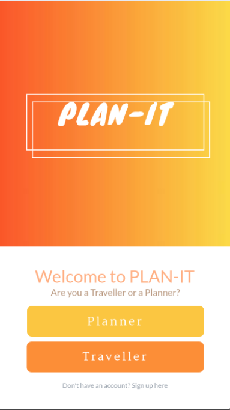

<!--
  Generated template for the LandingPage page.

  See http://ionicframework.com/docs/components/#navigation for more info on
  Ionic pages and navigation.
-->
<ion-content padding>
  
  <button color="danger" style="position:absolute;top:78%;left:14.5%;width: 70%;" ion-button (click)="next()">Traveler</button> 
</ion-content>